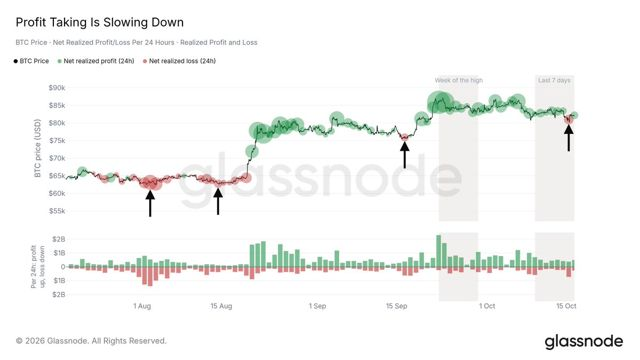
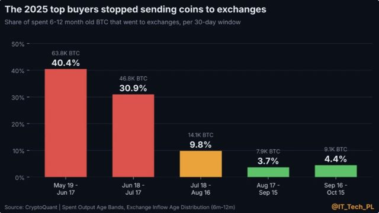
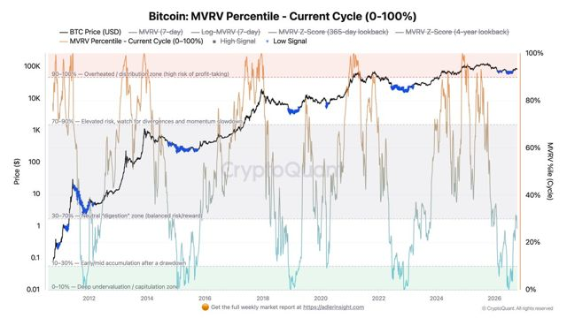
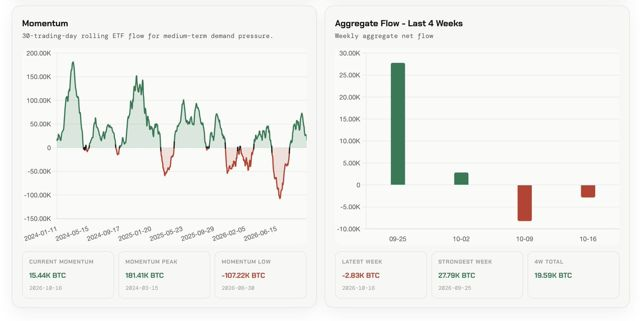
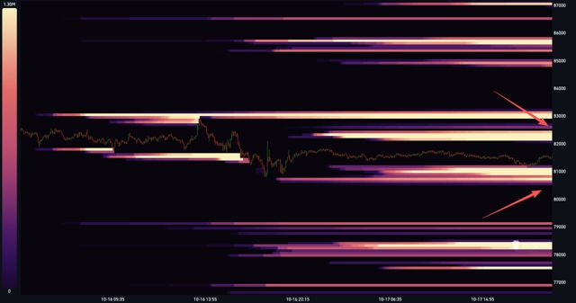
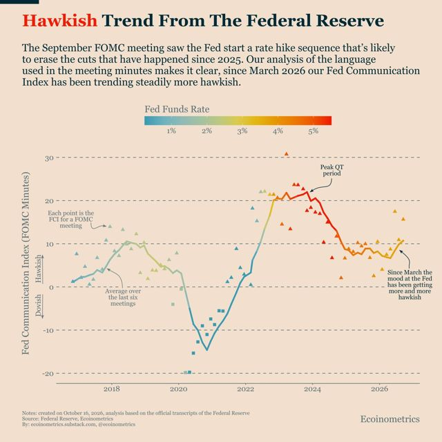

Cautious — BTC opens the week near $82.4k with a positive WoW print, yet oil/Hormuz and a jump in October hike odds keep the regime on watch.
Base case is a range ($80–86k) at 50%; downside slightly more likely than upside (35% vs 15%). Held: Monday open is calmer on oil and BTC WoW flipped positive as last week's losses rolled off, but Estimated FedWatch hike odds jumped sharply, leverage is still Leveraged Sell-Off, and Hormuz risk remains live — not enough to move either horizon after Saturday's shift. 1M held: the Oct 27–28 FOMC remains the swing event.
Cautious: caution signals outnumber supports (6 vs 3).
Trailed BTC by 4.9 pp this week (Final× basis). Concentrated in SOL (95%) with a small BTC anchor.
Cycle still Bearish at 32 with 4/16 bullish — still 32 Bearish / narrow breadth on the Oct 15 page, but 30d momentum broadened further vs Oct 8 (rising 11→15, none falling). Partly confirmed: 2 agree, 2 diverge on overlaps — spot levels look healthier than BH's Bearish cycle scores; MoM momentum is broadening. CheckOnChain levels as of 2026-10-19.
Structure neutral: no clear weekly trend — range-bound. Futures OI +1.8% WoW: rally fuelled by new leverage — squeeze risk rises.
| Lens | Signal | What it means |
|---|---|---|
| Liquidity | 🟡 Mixed | Fed ↑ improving (Wed 10-14 print) · Treasury cash rebuilding — no clear push. |
| Flows | 🔴 Outflows | ETFs −$228M last week · stablecoins edging down. |
| Spot vs leverage | 🟡 Leverage building | Futures OI +1.8% WoW: rally fuelled by new leverage — squeeze risk rises. |
| Macro | 🟢 Tailwind | Dollar and yields eased this week — looser conditions; equities soft. |
| On-chain | 🔴 Bearish cycle | Cycle 32 · Bearish · breadth 4/16 weak. On-chain cycle not yet supportive; 30d momentum turning up (15/16 rising). |
| 7-day outlook | 🟡 Downside skew | Base case most likely (50%); bear 35% vs bull 15%. |
| Dimension | Signal | What it means |
|---|---|---|
| Liquidity | 🟢 Improving, marginally (Wed 10-14 print) | Net Fed liquidity rising — tailwind for risk assets. |
| Liquidity momentum | 🟢 Turning up (slow, at risk) | Liquidity impulse turning up — needs a second weekly print to confirm. |
| Risk appetite | 🔴 Risk-off residual; Monday oil cooled a notch | Headwind for risk assets. |
| Crypto trend | ⚪ Range, mid-band | No strong push either way. |
| Crypto positioning | 🟡 Leverage building into weakness | Leverage-driven — more fragile. |
| Leverage | 🟡 Rebuilding, funding positive | Leverage building — squeeze risk rising. |
| ETF demand | 🔴 Net selling, slowing; Mon print pending | Headwind for risk assets. |
| USD pressure | 🔴 Restrictive, hike odds up (Estimated) | Firm dollar / high yields tighten conditions. |
| On-chain cycle | 🔴 32 Bearish · 4/16 (BlockHorizon · Oct 15, carried) | Headwind for risk assets. |
| RSDH | 🟢 BULL · SOL95/BTC5 | Supportive for risk assets. |
| Indicator | Level | WoW | MoM | Signal |
|---|---|---|---|---|
| BTC | $82,389 | +0.76% | +1.42% | ⚪ Range-bound |
| ETH | $2,417.77 | -1.07% | -8.13% | ⚪ Range-bound |
| DXY | 101.82 | -0.35% | +1.60% | 🟢 Easing — tailwind |
| U.S. 10Y | 5.10% | -15 bp | +9 bp | 🟢 Yields falling — tailwind |
| S&P 500 | 7,659 | -1.95% | +1.43% | ⚪ Range-bound |
| Nasdaq | 26,140 | -4.48% | +0.62% | ⚪ Range-bound |
| VIX | 20.0 | +34.70% | +12.87% | 🟡 Alert |
WoW = 7 days (crypto) / 5 sessions (markets) · MoM = 1 month.

Every burst of loss-selling since August landed at a local bottom; if the pattern holds, last week's selling just above $80k would mark the floor.

Only 4.4% of 6–12 month old coins that moved went to exchanges: people who bought high have mostly stopped selling, but new buyers haven't shown up yet.

After the rejection near $87,000, BTC fell back below the 30th percentile of its MVRV history: out of deep-value territory, but still what they call an accumulation zone.

Spot BTC ETFs had a second straight week of net outflows; the 30-day total is still positive but shrinking, though the weekly outflow got smaller.

The 48-hour liquidation heatmap shows the densest leverage clusters at $82.3K above and $80.6K below, flagged as price magnets either way.

Their score of Fed minutes reads firmly hawkish and has climbed since March; they see no quick return to easier policy and call that bad for Bitcoin.
Curated data-first analysts only · paraphrased, not advice